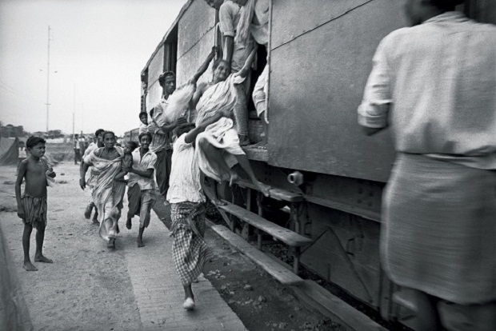

Indo-Pak War 1971
The Indo-Pakistani War of 1971 was a military confrontation between India and Pakistan that occurred during the liberation war in East Pakistan, from 3 December 1971 to the fall of Dacca (Dhaka) on 16 December 1971. The war began with preemptive aerial strikes on 11 Indian air stations that led to the commencement of hostilities with Pakistan and Indian entry into the war of independence in East Pakistan on the side of Bengali nationalist forces. Lasting just 13 days, it is one of the shortest wars in history. During the war, Indian and Pakistani militaries simultaneously clashed on the eastern and western front and ended the war after the Eastern Command of Pakistan military signed the Instrument of Surrender,on 16 December 1971 in Dhaka, marking the formation of East Pakistan as the new nation of Bangladesh. Officially, East Pakistan had earlier called for its secession from the unity of Pakistan on 26 March 1971. Approximately 90,000[29] to 93,000 Pakistani servicemen were taken prisoners by the Indian Army which included 79,676 to 81,000 uniformed personnel of the Pakistan Armed Forces, including some Bengali soldiers who had remained loyal to Pakistan.The remaining 10,324 to 12,500 prisoners were civilians, either family members of the military personnel or collaborators (razakars). It is estimated that between 300,000 and 3,000,000 civilians were killed in Bangladesh. As a result of the conflict, a further eight to ten million people fled the country at the time to seek refuge in neighbouring India.[40] Iran called Indian attack as an "aggression" and the Indian action as interference in Pakistan's domestic affairs.
Officially, the Instrument of Surrender of Pakistan Eastern Command stationed in East Pakistan was signed between the Lieutenant General Jagjit Singh Aurora, the GOC-in-C of Indian Eastern Command and Lieutenant-General A.A.K. Niazi, the Commander of the Pakistan Eastern Command, at the Ramna Race Course in Dhaka at 16:31Hrs IST on 16 December 1971.:As the surrender was accepted by Lieutenant-General Aurora without a word, the surrounding crowds on the race course started shouting anti-Pakistan slogans and there were reports of abuses aimed at the surrendering commanders of Pakistani military.: Following the surrender, the Indian Army took approximately ~90,000 Pakistani servicemen and their Bengali supporters as POWs, making it largest surrender since the World War II.:157[134] Initial counts were recorded as ~79,676 war prisoners who were the uniformed personnel, of which 55,692 were belonged to Pakistan Army, 16,354 Paramilitary, 5,296 Police, 1,000 Navy and 800 PAF. The remaining prisoners were civilians who were either family members of the military personnel or collaborators (razakars). The Hamoodur Rahman Commission and the POW Investigation Commission reports instituted by Pakistan lists the Pakistani POWs as follows: Apart from soldiers, it was estimated that 15,000 Bengali civilians were also made prisoners of war.

Lt Gen Niazi signing the Instrument of Surrender under the gaze of Lt Gen Aurora . Standing immediately behind from L to R: Vice Admiral Krishnan, Air Marshal Dewan, Lt Gen Sagat Singh, Maj Gen JFR Jacob (with Flt Lt Krishnamurthy peering over his shoulder). Veteran newscaster, Surojit Sen of All India Radio, is seen holding a microphone on the right.
Facts on the war:
1. A widespread genocide against the minority Hindu population in East Bengal forced India to accept around 10 million refugees in 1971.

2. Tikka Khan, the military commander in East Pakistan in 1971, earned the nickname of the “Butcher of Bengal” due to the atrocities he committed.
3. The then Prime Minister of India, Indira Gandhi decided to intervene in the Pakistan Civil War and help liberate East Pakistan.
4. Due to the intervention of India in their Civil War, West Pakistan grew hostile.
5. Pakistani Air Force launched a pre-emptive air strike on eleven air-fields in India on 3rd December 1971 at around 5:40 pm.
“Trying to catch the Indian Air Force napping, Yahya Khan, launched a Pakistani version of Israel’s 1967 air blitz in hopes that one rapid attack would cripple India’s far superior air power.
But India was alert, Pakistani pilots were inept, and Yahya’s strategy of scattering his thin air force over a dozen air fields was a bust!” – 34, Newsweek, 20 December 1971.
6. During these attacks, Taj Mahal was covered with twigs and leaves and draped with burlap as its marble glowed very bright.
.jpg)
7. Indira Gandhi held that the air strikes were a declaration of war against India. Indian Air Force replied with air strike that very night.
8. Operation Trident conducted by the Indian Navy.
Karachi port was attacked by India on the night of 4-5 December in which Pakistani destroyer PNS Khyber and minesweeper PNS Muhafiz were destroyed and PNS Shah Jahan was badly damaged.
9. Sri Lanka helped Pakistan in the 1971 War by allowing its aircraft to refuel at Bandaranaike International Airport in Colombo.
“We in Pakistan cannot forget the logistical and political support Sri Lanka extended to us in 1971 when it opened its refuelling facilities for us.
” – Seema Ilahi Baloch said in her speech to a Lanka-Pakistan business council in Colombo in 2011.
10. The Soviet Union sympathised with the Bangladeshis, and supported the Indian Army.
The USSR gave assurances to India that if a confrontation with the United States or China developed, it would take counter-measures.
11. In order to counter the attack, Pakistan sent its submarine PNS Ghazi.
.jpg)
This submarine sank en route under mysterious circumstances off Vishakhapatnam’s coast.
12. On December 9, Indian Navy suffered its biggest loss when INS Khukri was sunk by PNS Hangor in the Arabian Sea. 18 officers and 176 sailors lost their lives.
13. Approximately 90,000 prisoners of war, including Pakistani soldiers and their East Pakistani civilian supporters were taken by India.
.jpg)
It was the largest number of POWs since the Second World War.
Indira Gandhi Declared in the Indian Parliament:
Dacca is now the free capital of a free country. We hail the people of Bangladesh in their hour of triumph. All nations who value the human spirit will recognize it as a significant milestone in man’s quest for liberty.
14. The Instrument of Surrender was signed at Ramna Race Course in Dhaka on 16th December 1971.
15. Pakistan faced humiliation and a complete setback from its rival nation.
.jpg)
In his book The 1971 Indo-Pak War: A Soldier’s Narrative Pakistani Major General Hakeem Arshad Qureshi a veteran of this conflict noted:
“We must accept the fact that, as a people, we had also contributed to the bifurcation of our own country.”
16. Lance Naik Albert Ekka, Flying Officer Nirmal Jit Singh Sekhon, Major Hoshiar Singh and Second Lieutenant Arun Khetarpal were awarded Param Vir Chakra for their service in the ’71 war.
.jpg)
Flying Officer Nirmal Jit Singh Sekhon.